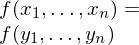
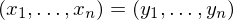
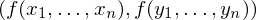
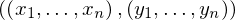
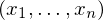

Expression of type Conditional¶
from the theory of proveit.core_expr_types.operations¶
In [1]:
import proveit
# Automation is not needed when building an expression:
proveit.defaults.automation = False # This will speed things up.
proveit.defaults.inline_pngs = False # Makes files smaller.
%load_expr # Load the stored expression as 'stored_expr'
# import Expression classes needed to build the expression
from proveit import Conditional
from proveit.core_expr_types import f__x_1_to_n, f__y_1_to_n, x_1_to_n, y_1_to_n
from proveit.logic import Equals
In [2]:
# build up the expression from sub-expressions
expr = Conditional(Equals(f__x_1_to_n, f__y_1_to_n).with_wrapping_at(2), Equals([x_1_to_n], [y_1_to_n]))
Out[2]:
In [3]:
# check that the built expression is the same as the stored expression
assert expr == stored_expr
assert expr._style_id == stored_expr._style_id
print("Passed sanity check: expr matches stored_expr")
In [4]:
# Show the LaTeX representation of the expression for convenience if you need it.
print(expr.latex())
In [5]:
expr.style_options()
Out[5]:
In [6]:
# display the expression information
expr.expr_info()
Out[6]:
| core type | sub-expressions | expression | |
|---|---|---|---|
| 0 | Conditional | value: 1 condition: 2 | |
| 1 | Operation | operator: 4 operands: 3 |  |
| 2 | Operation | operator: 4 operands: 5 |  |
| 3 | ExprTuple | 6, 7 |  |
| 4 | Literal |  | |
| 5 | ExprTuple | 8, 10 |  |
| 6 | Operation | operator: 9 operands: 8 |  |
| 7 | Operation | operator: 9 operands: 10 |  |
| 8 | ExprTuple | 11 |  |
| 9 | Variable |  | |
| 10 | ExprTuple | 12 |  |
| 11 | ExprRange | lambda_map: 13 start_index: 15 end_index: 16 |  |
| 12 | ExprRange | lambda_map: 14 start_index: 15 end_index: 16 |  |
| 13 | Lambda | parameter: 22 body: 17 |  |
| 14 | Lambda | parameter: 22 body: 18 |  |
| 15 | Literal |  | |
| 16 | Variable |  | |
| 17 | IndexedVar | variable: 19 index: 22 |  |
| 18 | IndexedVar | variable: 20 index: 22 |  |
| 19 | Variable |  | |
| 20 | Variable |  | |
| 21 | ExprTuple | 22 |  |
| 22 | Variable |  |